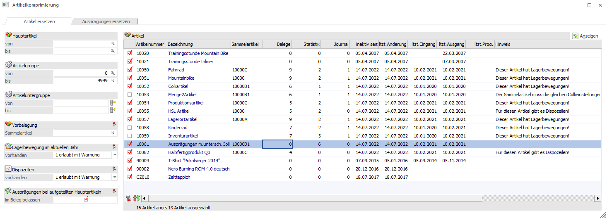

Hier werden alle inaktiven Hauptartikel (mit oder ohne Ausprägungen) aufgelistet.
Möglich ist die Selektion nach:
Ø Artikel
Ø Artikelgruppe
Ø Artikeluntergruppe
Ø Sammelartikel
Als Sammelartikel kann nur ein Hauptartikel ohne Ausprägungen verwendet werden, der kein Produktionsartikel und keine Handelsstückliste ist, also Lagertyp Hauptartikel oder lagerneutral.
Folgende Optionen sind für die Auswahl der zu komprimierenden Artikel entscheidend und werden benutzerspezifisch gespeichert:
Ø Lagerbewegung im aktuellen Jahr (0 erlaubt, 1 erlaubt mit Warnung, 2 nicht erlaubt)
Wenn ein Artikel im aktuellen Jahr bebucht ist und die Option auf "nicht erlaubt" steht, kann der Artikel nicht umgestellt werden, ansonsten werden Lagerbewegungen als Hinweis oder gar nicht angezeigt.
Ø Dispozeilen (0 erlaubt, 1 erlaubt mit Warnung, 2 nicht erlaubt)
Wenn es für einen Artikel Dispozeilen gibt und die Option auf "nicht erlaubt" steht, kann der Artikel nicht umgestellt werden, ansonsten wird das Vorhandensein der Dispozeilen als Hinweis oder gar nicht angezeigt, allerdings nur dann, wenn es keine andere Warnung gibt.
Ø Checkbox "Ausprägungen bei aufgeteilten Hauptartikeln im Beleg belassen"
Wenn diese Checkbox aktiviert ist, wird die Hauptartikelzeile gelöscht und die Ausprägungszeilen behalten. Ebenso bleiben die Verweise, die Reservierungs- und die Kommissionierungszeilen erhalten.
Falls ein Sammelartikel vorbelegt wurde, wird dieser in die Tabelle eingefügt. Zusätzlich werden:
ü das Datum der letzten Änderung
ü des letzten Eingangs/Ausgangs
ü der letzten Produktion und
ü Inaktiv seit
angezeigt.
Hinweis
Ein Artikel kann nicht komprimiert werden, wenn:
ü die VK-Colli-Einstellung (Mengenfaktor) des Artikels nicht mit der des Sammelartikels übereinstimmt (sofern der Artikel bebucht ist und Lagerbewegungen erlaubt sind)
ü bei Menge2-Artikel die Colli des Artikels nicht mit der des Sammelartikels übereinstimmt
ü der Artikel als Halbfertigprodukt in der Produktion verwendet wird
ü der Artikel Lagerbewegungen im aktuellen Jahr hat und die Option "Lagerbewegungen" auf "nicht erlaubt" steht
ü die Ausprägung eines Hauptartikels nicht komprimiert werden kann, wird die Ausprägungsartikelnummer zusätzlich beim Hinweis angezeigt
Wenn ein Artikel aufgrund eines Umstandes nicht umgestellt werden kann, wird die Auswahl-Checkbox in der Tabelle deaktiviert und der Grund wird in der eingeblendeten Spalte "Hinweis" angezeigt.
